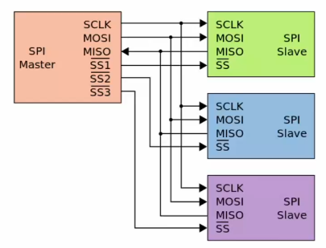
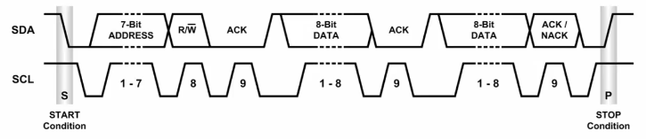

Interfaces
- FPGAs come in a wide variety of packages with a range of IO capabilities
- Most pins are reserved for specific uses such as voltage rails, clocks, configuration
- Other pins are multifunction and used for I/O
- FPGAs can be incorporated into a system in many ways
- Standalone, interfacing with peripherals and implementing all functionality
- As a peer to a more general purpose processor, connected with high bandwith
- As an accelerator on a high performance bus with shared memory
- As a separate device that communicates with another processor over a lower throughput bus
- How to integerate and communicate with an FPGA depends on the application
- Tightly coupled offers good bandwith but requires complex OS support
- Treating it as an accelerator like a GPU allows it to work with the CPU
- New hybrid FPGA designs that include an embedded processor in the same fabric
- Design built around a processor subsystem along with programmable logic
- High throughput interconnect
ADCs and DACs
- Interfacing with the real, analog world requires converting between analog and digital signals
- Analog-to-digital converters take an analog voltage level and convert it to a digital word
- Digital-to-analog converters take a digital word and convert to an analog voltage level
- ADCs and DACs are characterised by
- Sampling rate: the number of values the device can create/consume per second
- Determines the bandwidth based on the Nyquist theorem
- Resolution: the number of different levels the device can differentiate between
- Various fidelity characteristics such as linearity, noise, jitter
- Sampling rate: the number of values the device can create/consume per second
- In most cases, external ADCs/DACs are used with FPGAs
- Modern FPGAs include analog interfaces with internal ADCs
- Recent RFSoC radio-focused FPGAs include high speed ADCs and DACs on chip for integrated RF implementation
GPIO
- Most FPGAs and microcontrollers have pins for general purpose I/O
- Each pin can be set as an input or output for a single bit
- The I/O voltage level is customisable for banks of GPIO pins
- Easiest way to get data in and out of an FPGA
- Support switching rates of over 200MHz
- The number of pins is generally limited and insufficient for creating large parallel data busses
- Parallel I/O at high speeds requires detailed timing calibration and synchronisation
PWM
- Method of switching an output on and off, where the ratio of on to off, the duty cycle, gives an average output level
- Used for changing motor speed, servo direction, LED brightness
- Works due to the inertial load of output devices
- High speed switching means the overall output level is the average of the high and low periods
- An LED flickering at 500Hz cannot be detected as flickering by a human eye
- Microcontrollers use timers to generate waveforms, and the number of timers available limits the number of PWM signals that can be generated
- FPGAs can create counters specifically for PWM
module pwmgen #(parameter CNTR_BITS=6) (input clk, rst,
input [CNTR_BITS-1:0] duty,
output pwm_out);
reg [CNTR_BITS-1:0] pwm_step;
always @ (posedge clk) begin
if(rst)
pwm_step <= 1'b0;
else
pwm_step <= pwm_step + 1'b1;
end
assign pwm_out = (duty >= pwm_step);
endmodule
CNTR_BITSis the width of the counterdutyis the number of steps that the pwm signal is high forpwm_stepis the internal counter for each period
UART
- Universal Asynchronous Receiver/Transmitter is the easier way of sending multi-bit data between two systems
- Uses a single wire
- Asynchronous because no clock line between
- Baud rate is pre-agreed
- Data is transmitted in frames
- Frames can vary in bit length, and sometimes include parity, start, and stop bits
- Shift register is used at either end for parallel-serial conversion
- Rx of one device connected to Tx of another
- Combination of start and stop bit means frames can always be detected
- Can be issues when clocks are not well matched, which limits possible throughput
SPI
- Serial Peripheral Interface is a syncrhonous communication protocol that uses a shared clock at both transmitter and receiver
- Master initiates communication and generates clock
- Slave devices used as peripherals
- A single master can communicate with multiple slaves on the same SPI bus
- Four signals required
SCLK- the clock generated by the masterMISO- master in slave out- Data input from slave to master
MOSI- Data output from master to slave
SS- slave select- Select which slave is being communicated with
- Typically active low
- Each slave connected to a master requires a separate slave select line
- Master outputs the same clock for synchronous communication

- To initiate communication, the master sets the required slave select line low and sends a clock signal
- On each clock edge, the data can be sent bi-directionally on
MOSIandMISO - With multiple slaves, the
MISOline must only be driven by one at a time so other slaves must be set to high impedance - All devices must agree on clock frequency, polarity and phase
- Specified in datasheets
I2C
- Inter-intergrated circuit protocol is similar do SPI but has different features
- Uses fewer wires due to lack of slave select lines
- Uses addressing to allow a large number of devices to share the same lines
- Only two wires
- SDA - serial data
- SCL - serial clock
- I2C clock is usually 100kHz
- All devices connected to an I2C bus act the same
- Whichever device is transmitting is the master for that communication
- Pull-up resistors keep each line high when no device is transmitting
- The device intending to communicate indicates this by pulling SDA low
- Data is then put onto the bus while SCL is low and sampled by slave devices during the rising edges
- Simpler signalling means more complicated data framing
- Pulled low to start
- 7 bit address sent
- 1 bit for read/write mode
- 1 bit slave ack
- 8 bit word
- 1 bit ack signal
- Stop bit

- Takes 20 cycles to read a single byte
- Vs 10 for SPI
- I2C is also half-duplex with a slow clock
- I2C used when there is less pins, SPI needed for higher data throughput
High Speed Serial I/O
- Higher speed communication off ship is facilitated by special serial/desrial blocks
- These take data words and serialise them, and transmit them over differential pairs of I/O pins
- Controller by high-speed clocks
- Can acheive up to 10s of gigabit speeds
- Differential signalling is used to improve noise resistance at high speed
- Signal sent twice, one an inverted copy of the other
- Balanced lines means better resistance to EM interference
- Clock information is encoded in data that is sent
- Data is encoded and scrambled to ensure sufficient transitions between 1s and 0s for receiver to be able to decode
- Extra bits are added to the data bits to ensure sufficient transitions and DC balance
- Specific schemes are specified by different physical layer standards
- 8b/10b means 2 extra bits are added to each byte
- Effective data rate is determined from two specifications
- Baud rate
- Encoding scheme
- For example, 2GHz with 8b/10b encoding gives 200MB/s
- 20% of baud rate is encoding overhead
- Multiple lanes are used to improve throughput
- PCIe gen 3 had a transfer rate of 8Gb/s per lane and uses a 128b/130b encoding
- 985 MB/s
- 1.5% encoding overhead
- 16 lanes (PCIe3 x16) gives about 16Gbps
- PCIe gen 3 had a transfer rate of 8Gb/s per lane and uses a 128b/130b encoding
- Use in many interfaces
- Serial ATA for disks and storage
- Gigabit ethernet
- Used over a variety of physical media
- Circuits required to interface with high speed I/O have to be designed carefully to meet strict timing requirements
- Vendors usually provide IP for this
- IP blocks designed to specific standard for the interface they are meant to be using
- The simplest form of communicating between modules in design is the ready/valid handshaking
- One module is a source, another a sink
- The sink module asserts a ready signal when it is ready to consume data
- The source module asserts a valid signal when it is outputting valid data
- At any clock edge when both ready and valid are asserted, data is transferred on the data line
- Can introduce a bottleneck
- In the source module, the pipeline can be halted when the sink is not ready, and resumed when ready
- In the sink, ready is asserted when data is ready to be accepted
- Such an interface allows a FIFO buffer to be inserted between modules to offer more isolation

AXI4
- Most hybrid FPGAs include an ARM processor
- Advanced microcontroller bus architecture (AMBA) is an on-chip interconnect specification introduced by ARM for use in SoCs
- Defines a number of interfaces
- AXI4 for high performance memory mapped communication
- AXI4-Lite is a simpler interface for low throughput
- AXI4-Stream is for high speed streaming data
- Reads are initiated by a master over the read address channel
- The slave response with data over the read data channel
- Writes are similar, with address and control data being placed on the write address channel
- The master sends data over the write data channel
- Slave responds on the write response channel
- Read and write channels are separeatre, allowing bidirectional communication
- AXI4 supports bursts of up to 256 words
- Each master/slave pair can have a separate clock
- A system consists of multiple masters and slaves connected on an interconnect
- Most vendor IP is provided with an AXI4 interface to simplify integration into a design
- Different interface specifications are shown in datasheets